Watch a 64‑bit RISC‑V processor think.
Six stages, one instruction per clock. This is the real core from the repository, running a real program in your browser, cycle by cycle, exactly as the SystemVerilog does.
Press play.
Every instruction is 32 bits. Click one.
Type an instruction, or flip any bit and watch the CPU's decoder read something new. The colours are the fields the ControlUnit looks at; the lights underneath are the control signals it produces, with the names used in src/Control_Unit.sv.
Watch it move.
Five animations, each drawn from the real design: the pipeline is a trace of the cycle-exact model (the one the RTL is checked against), the multiplier step uses real numbers and checks its answer, the cache and predictor follow the same rules as the SystemVerilog, and the boot sequence runs the real firmware. They are plain animated SVGs, so they also play in the README.

Guess the branches well and the same program finishes sooner.
Both CPUs below run the same program on the same clock. One always guesses that branches fall through; the other uses gshare: 2-bit counters indexed by the program counter XOR the last few branch outcomes. Each strip is the WRITEBACK stage over time: a filled tick is an instruction finishing, a coloured gap is a bubble.
Always not taken
gshare
Inside gshare
Global history, newest bit on the right, then the counter table. Outlined: read this cycle. Ringed: trained by a branch in EXECUTE.
- strongly not taken
- weakly not taken
- weakly taken
- strongly taken
Why gaps appear
- Flush: a wrong guess or a
ret, 3 cycles lost - Redirect: a taken branch or
jalseen in FETCH2, 1 cycle - Load stall: data not back from memory yet, 1 cycle
- Pipeline filling up at the start, 5 cycles
- Instruction cache miss: waiting for main memory
- Data cache miss: a load waiting for its line
- Multiply or divide still working
Five branch predictors, one race.
Every conditional branch a program runs is replayed through five predictors, from a simple per-branch table to the families inside today's CPUs: a perceptron (a tiny neural network per branch, like AMD's Zen) and TAGE (tables looked up with longer and longer histories, used in AMD Zen 2 onward, Intel and ARM cores). Each guesses before it is told the answer. Try predictor challenge: one of its branches depends on the two branches before it.
gshare and the tournament are built in Sixfold's SystemVerilog; the perceptron and TAGE are software models (model/predictors.js), the way architects try a predictor before building it.
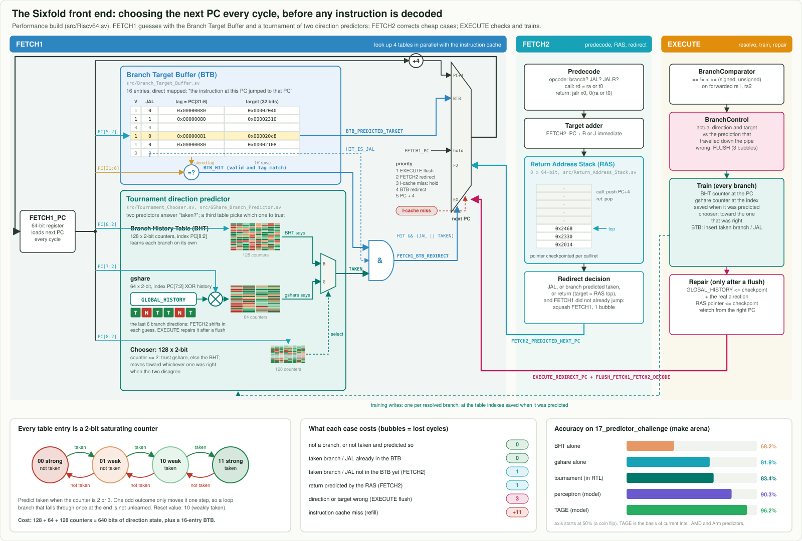
Inside the caches.
Main memory needs 10 cycles to deliver anything, so Sixfold keeps two small, fast copies next to the pipeline: 4 KiB for instructions and 4 KiB for data, each 64 sets of two 32-byte lines. Every address is cut into three fields: the tag says which piece of memory, the set index picks one of the 64 sets, the offset picks the byte inside the line. Each set can hold two lines (top half: way 0, bottom half: way 1); when both are full the one used longest ago is replaced. After each miss, both caches also fetch the next line on their own (prefetching, as every modern CPU does).
Instruction cache
Data cache
- empty line
- holds a copy
- refilling from main memory
- being prefetched
- hit this cycle
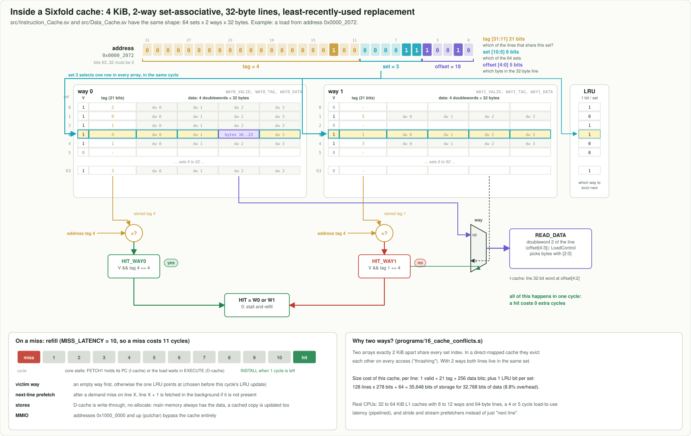
Bit tricks: one instruction instead of a loop.
Sixfold implements the complete B extension: Zba, Zbb and Zbs, the bit-manipulation instructions every current RISC-V application processor has. Counting the 1 bits of a register takes a 64-trip loop in plain RV64I and one cpop here; finding the end of a string goes 8 bytes at a time with orc.b. Pick an operation and a value: the result comes from the same model code that is checked against the RTL.
Inside the multiplier: carries that never wait.
Adding 16 shifted copies of a number one after another would make each one wait for the carries of the last. A Wallace tree adds them in columns instead: every group of three rows goes through a row of full adders and comes out as two (sum bits stay put, carry bits move one column left). Rows shrink 16, 11, 8, 6, 4, 3, 2 and no carry ever travels far until one final add.
Sixfold's step does 64 x 16 bits plus a running total kept as two numbers, every clock cycle: src/Carry_Save_Multiplier.sv. That change moved the multiplier off the critical path (747 ps to well under the rest of the core at 7 nm).
A whole computer: boot it right here.
On an FPGA board Sixfold becomes a small computer. It has 64 KiB of memory, a serial port, LEDs, switches, buttons and a four-digit display, and boot firmware that starts at address 0, the way a PC starts in its BIOS. The firmware prints a banner, loads a program sent from your PC, runs it, and reports PASS and the cycle count. Below, that same firmware runs on the cycle-exact model at 1 MHz, with this page acting as a Digilent Basys 3: the terminal is the serial port, and the display, LEDs, switches and buttons are the device registers at 0x1000_0000. Click the terminal to type, upload a program, or press the centre button to run the one loaded.
Try calculator: set A on switches 15–8 and B on 7–0 (click them), then press a button: up adds, down subtracts, left multiplies, right divides; the centre button switches to a light painter. Or 20_leds_and_buttons, and hold a button to stop the light, or interrupt_echo, which does all its work in interrupt handlers: type into the terminal. 22_multitasking runs a tiny operating system with three tasks. The cycle count the firmware reports is the one in the table under Numbers. How the FPGA version works, and the board sheets for the Basys 3, the ULX3S and the Arty A7-100T.
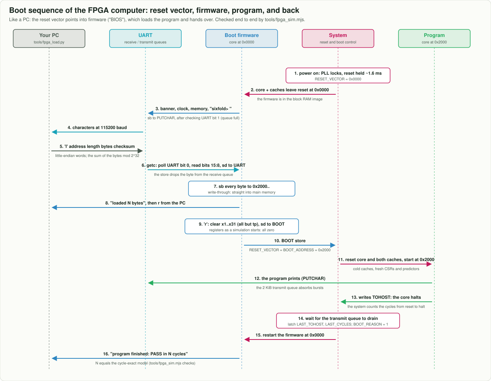
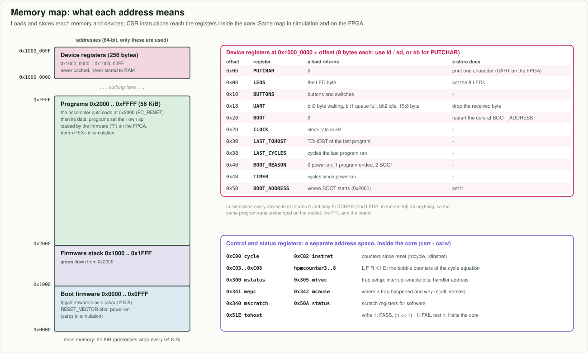
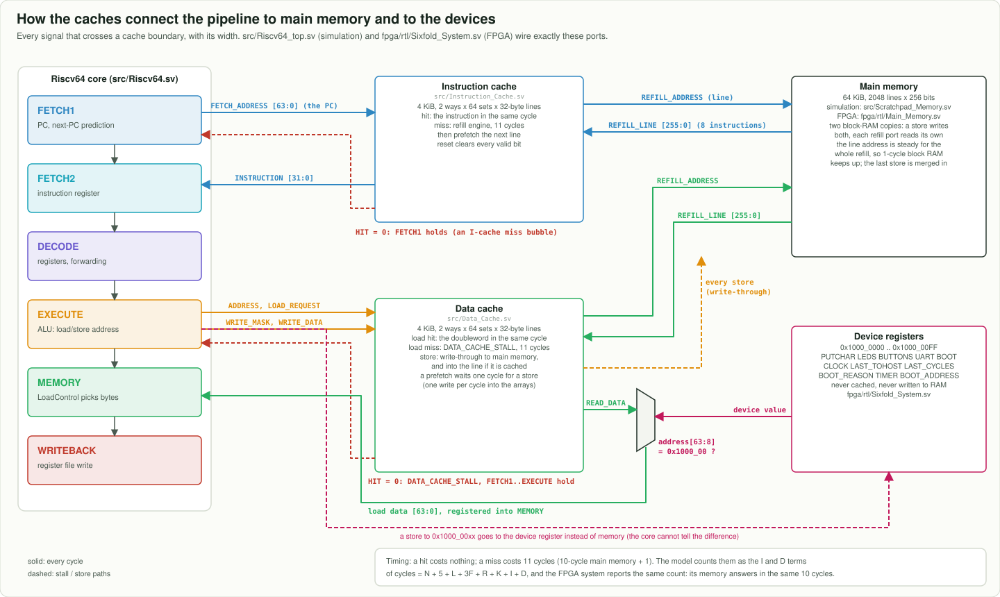
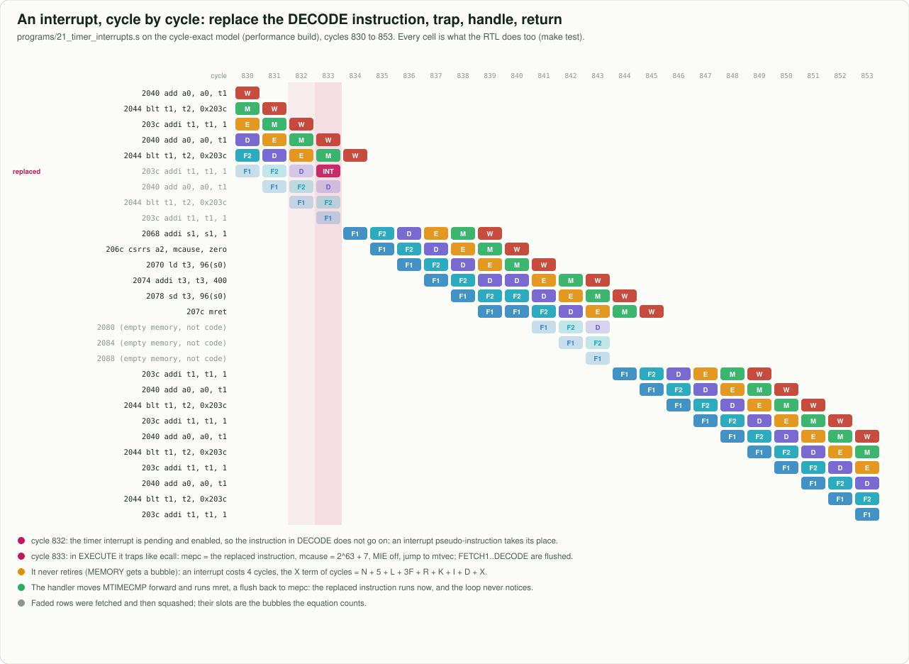
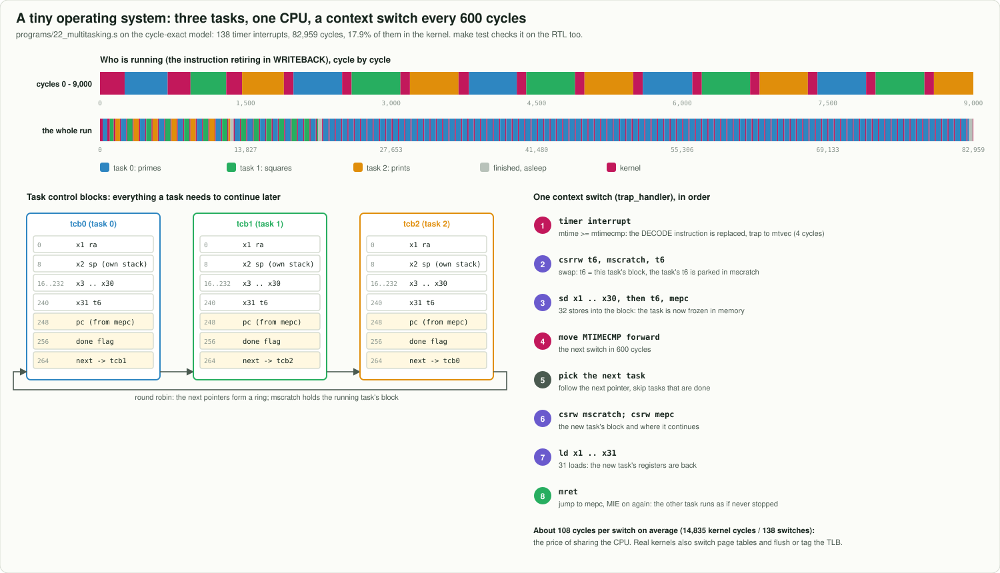
Three programs, one CPU.
This is how every operating system shares a processor. Three ordinary programs run on Sixfold: one counts primes, one adds up squares, one prints lines. None of them knows about the others. Every quantum of cycles the machine timer interrupts whichever one is running; the kernel saves its 31 registers and its PC into its task control block in memory, loads the next task's, and returns into it with mret. Each row below is one part of the program, time runs left to right, and every cycle belongs to the last instruction that finished. Make the quantum shorter and watch the kernel's share grow.
The source is programs/22_multitasking.s, about 120 instructions of kernel; open it in the lab to step through a context switch one cycle at a time. Chapter 9 of the course explains interrupts and the switch.
Then it became a chip.
This is a 32-bit prototype of this pipeline after place and route on SkyWater's 130 nm process: every coloured speck is one standard cell at its real position. Drag the divider to peel the metal wiring off, drag the picture to pan, and use the buttons or your scroll wheel over it to zoom.
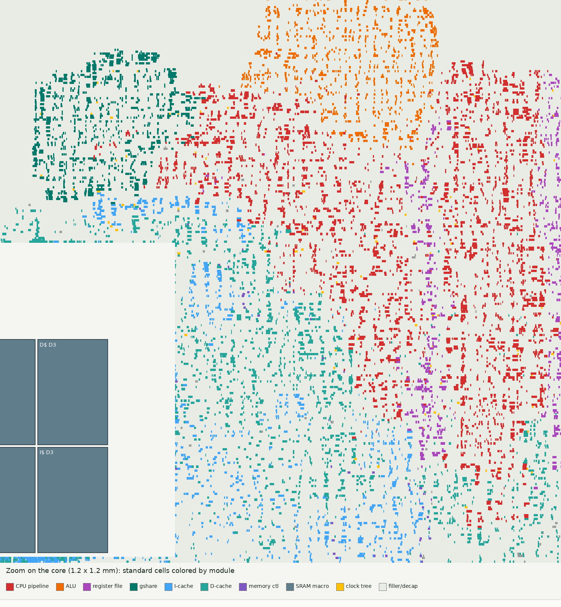
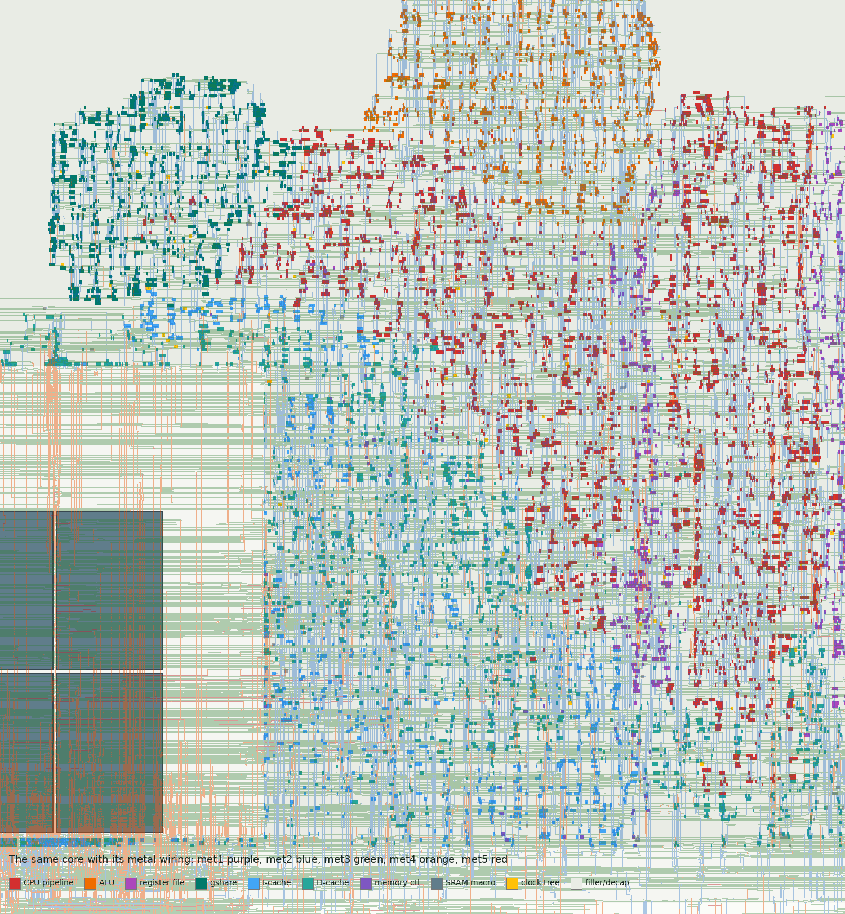
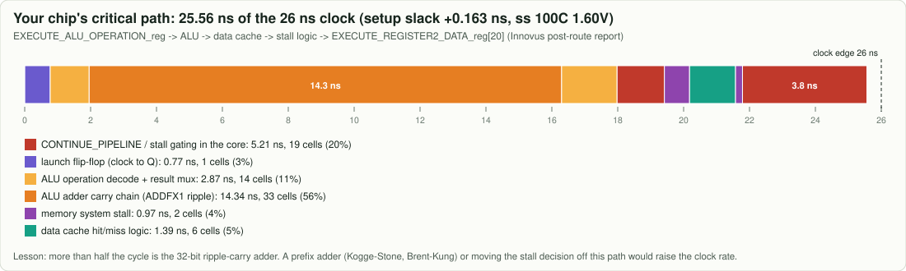
The gates it is made of, as drawn in the process design kit
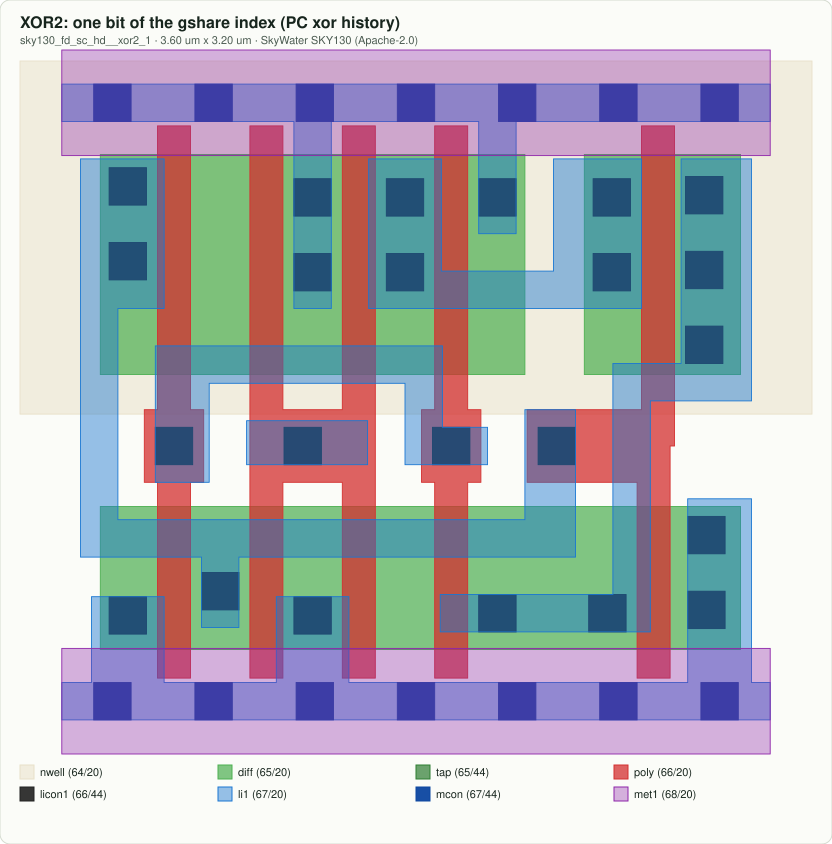
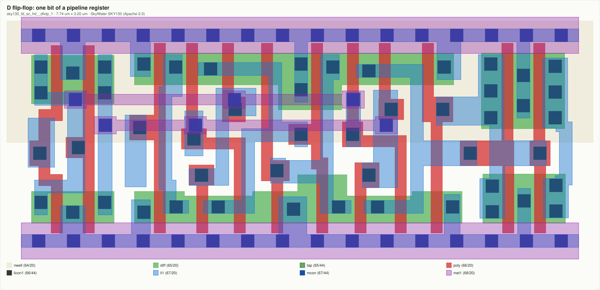
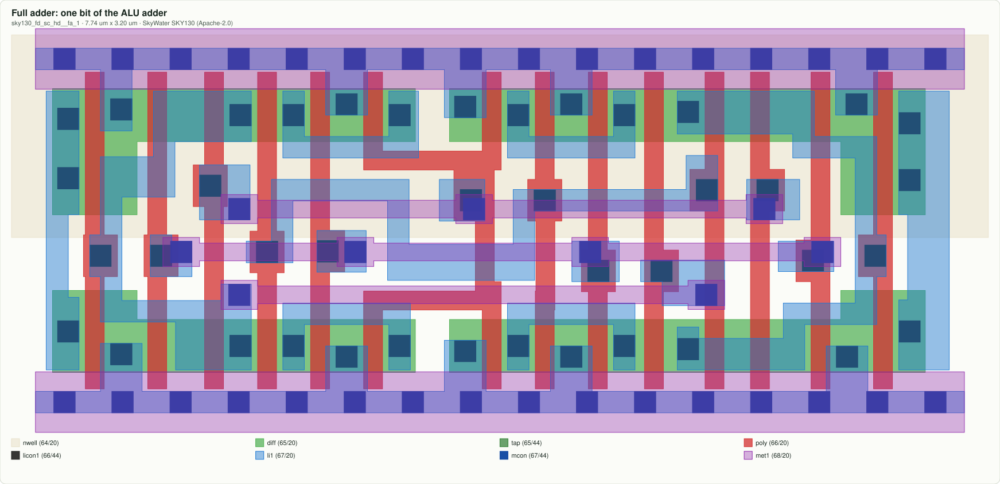
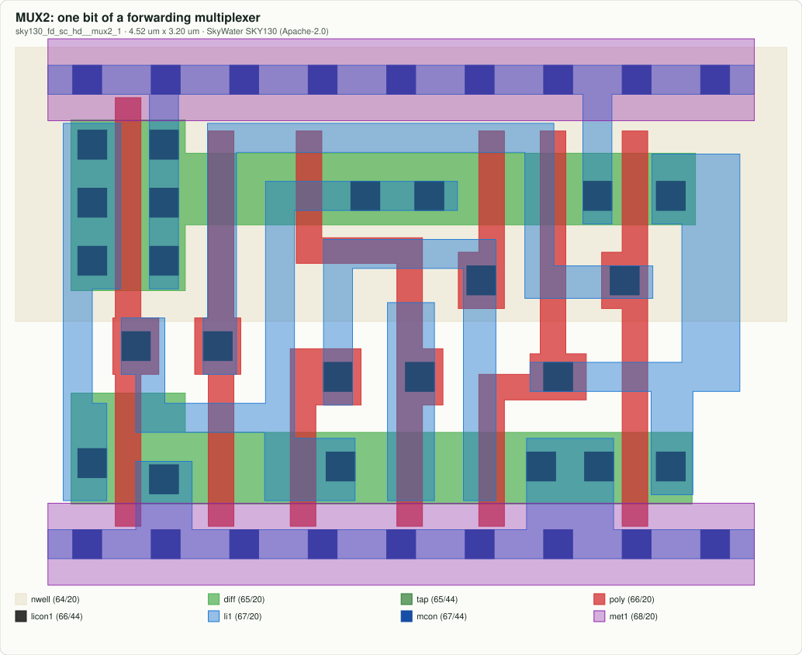
Where every cycle goes, for every program.
Measured right now in your browser by the cycle-exact model. Each bar is one program's run time in clock cycles, split into useful work and each kind of bubble: the performance edition on top, the baseline design below. Select a program to step through it in the lab.
Running every program…
A shorter critical path, and fewer wasted cycles.
The baseline computes a whole 64-bit division in one clock cycle: 64 subtractions in a row, 133 ns. The performance edition divides one bit per cycle, multiplies with a Wallace tree, adds carry-lookahead (Kogge-Stone) adders, and wins cycles back with a tournament branch predictor, a branch target buffer, a return address stack and precise load stalls, behind instruction and data caches with prefetching. Both designs are in the repository and both are checked cycle by cycle.
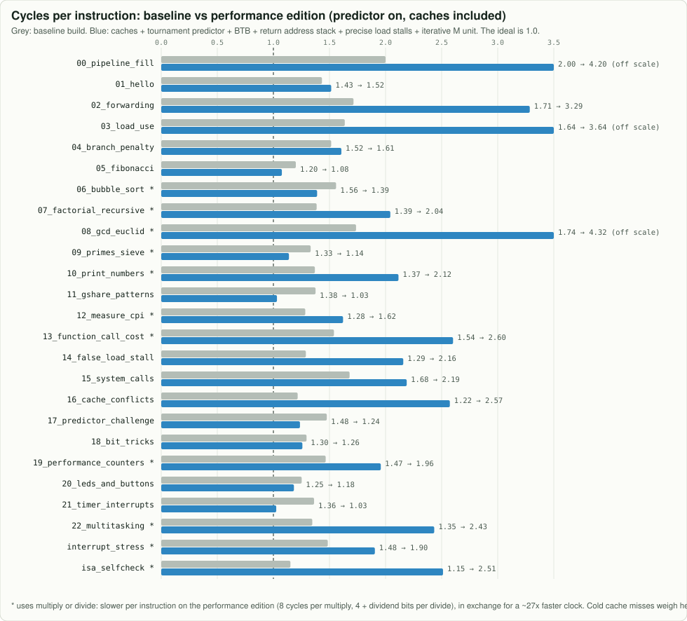
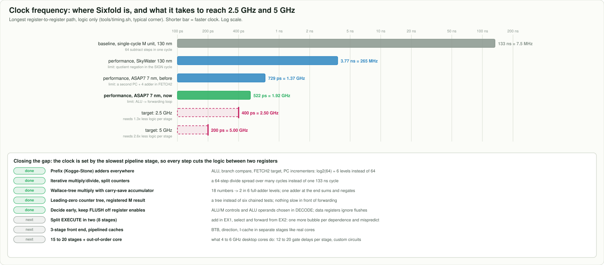
Why not higher? In 130 nm one carry step of an adder takes about 330 ps; in 7 nm the whole core's longest path is 513 ps; 2.5 GHz needs 400 ps and 5 GHz 200 ps. Smaller processes are faster, but a process node is chosen by the foundry, not written in RTL. How every number was measured.
Learn it in nine short chapters.
Each chapter explains one idea, shows the picture that goes with it, points at the lines of SystemVerilog that do it, and gives you a program to run.
Run it yourself.
Everything on this page also runs from a terminal on Ubuntu or Windows Subsystem for Linux (WSL).